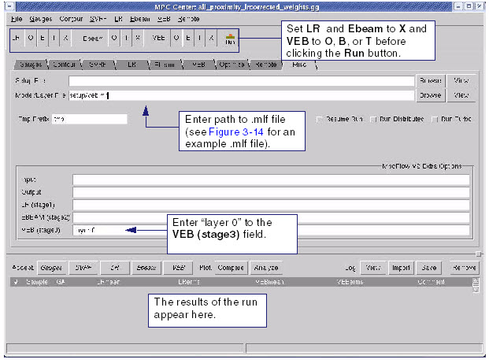
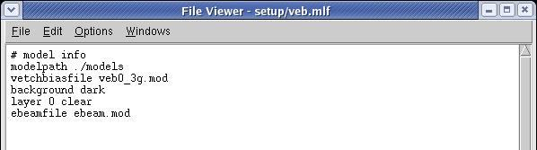
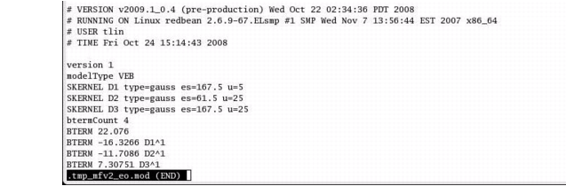

Enter a model
or layer file in MPC Center and build the corrected VEB Short Range
Model.
Procedure
- Click the Misc tab (see Figure 1).
Figure 1. Misc Tab (VEB)
- In the Misc page, enter the
path to the .mlf file in the Model/Layer File field,
- Enter “inputlayer 0” in the VEB (stage 3) field, which
indicates that the design file contours are incorporated as part
of the calibration calculations. Figure 2 shows an example .mlf file.
Figure 2. Example Mask Layer
File (.mlf) for VEB Model
- In the MPC Center button bar,
set the run control so that only the VEB options are enabled. Set VEB to O (Optimize), B (Build), or T (Try) and LR and Ebeam to X.
- Click the Run button to generate the model.
This produces a .mod file, which is the VEB model you reference
in your SVRF file for proximity corrections (see Figure 3).
Figure 3. Proximity Model File Example
You can also see the model
fit results at the bottom of the screen in the VEB page. If you
want to add further complexity to your models for better fit results,
you can add another kernel and re-run the process.